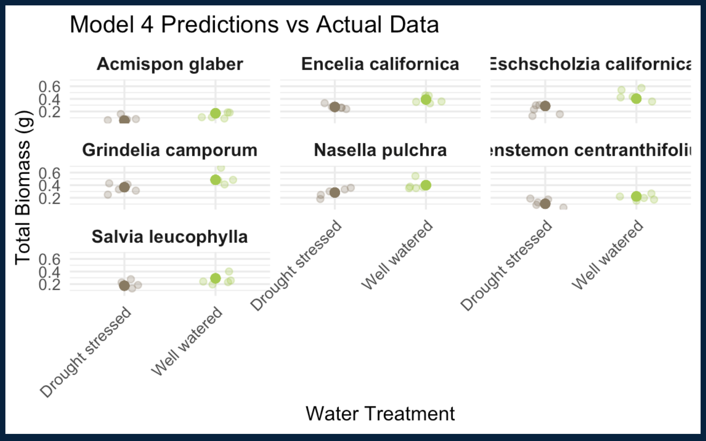
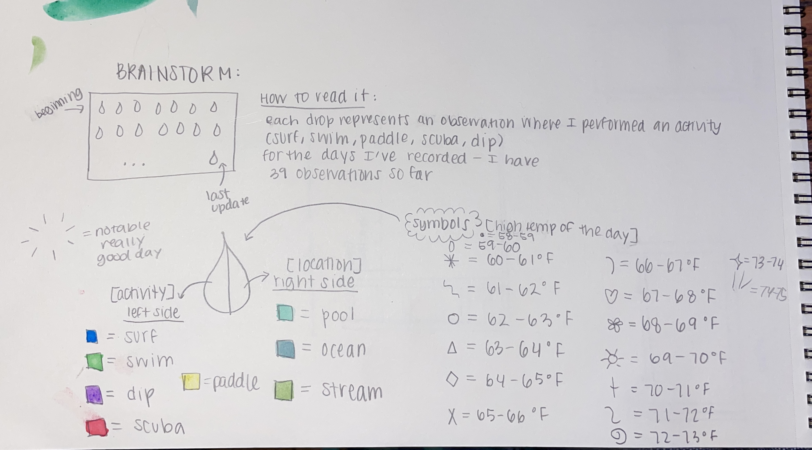
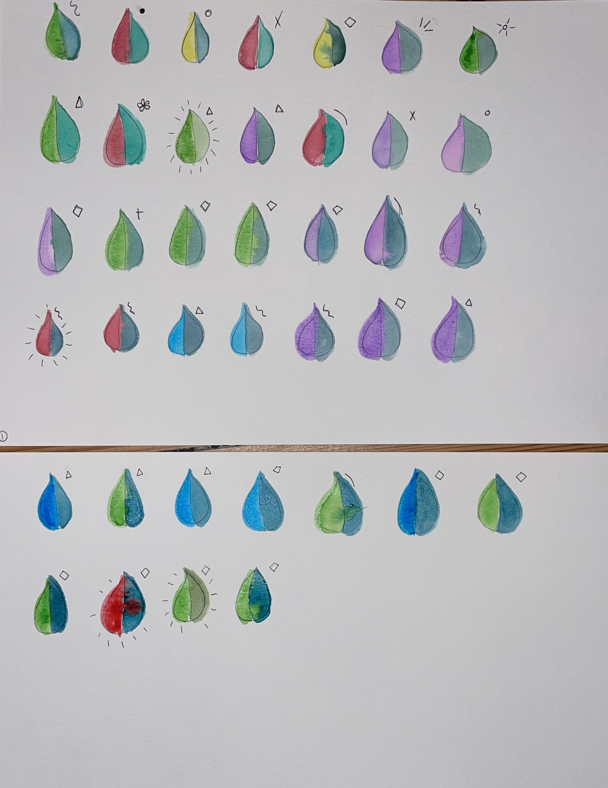
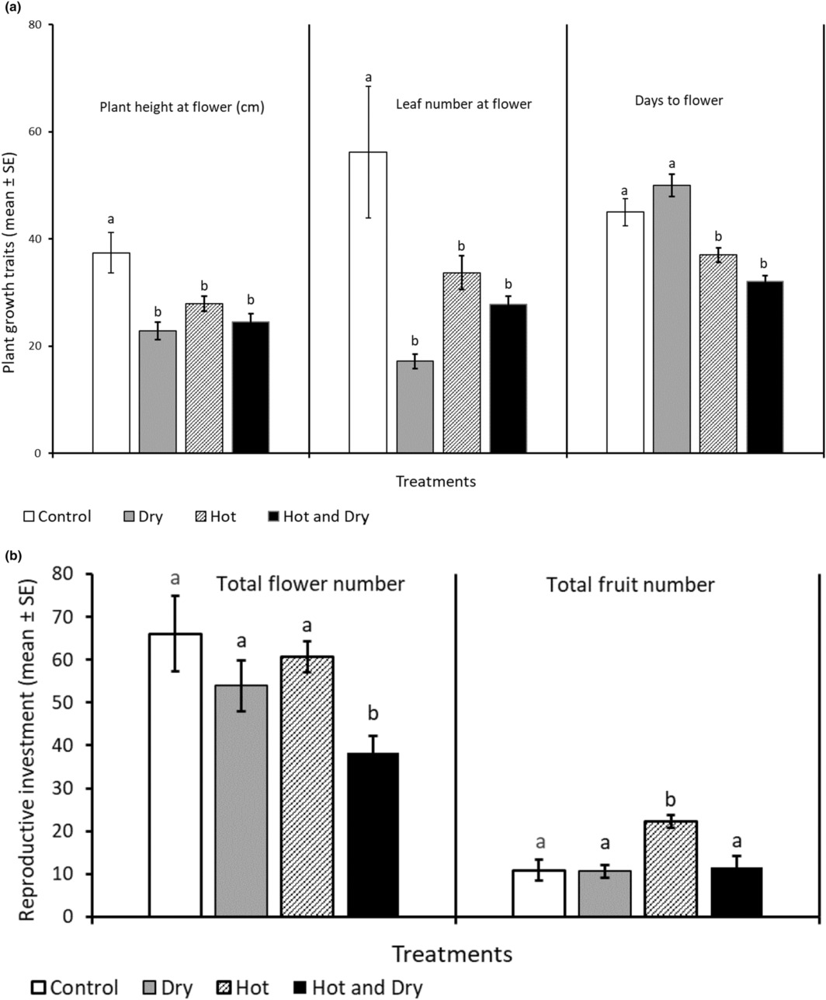
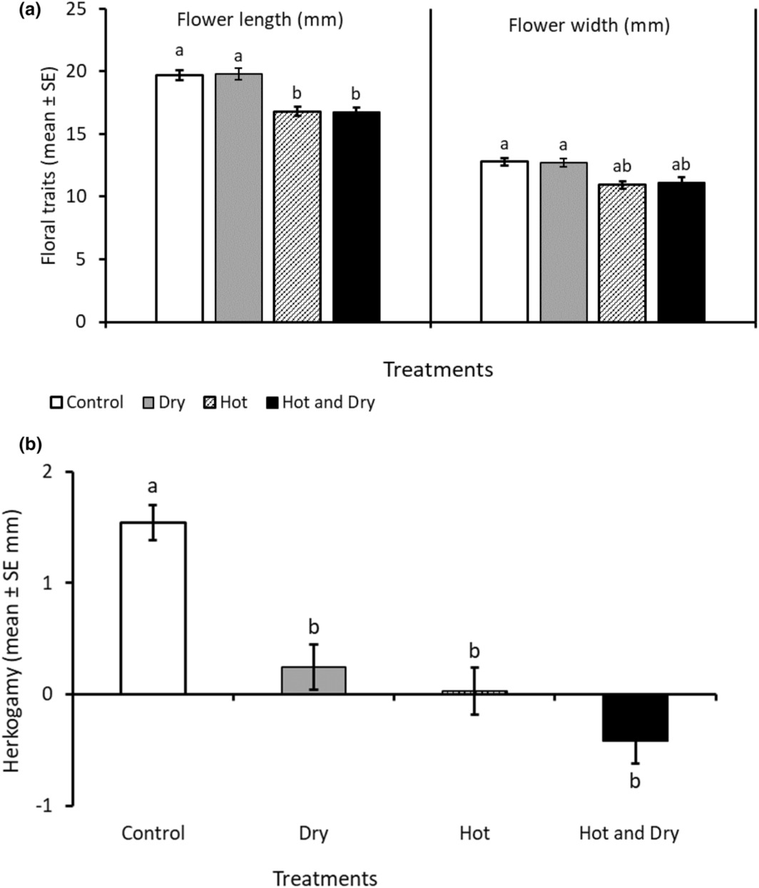
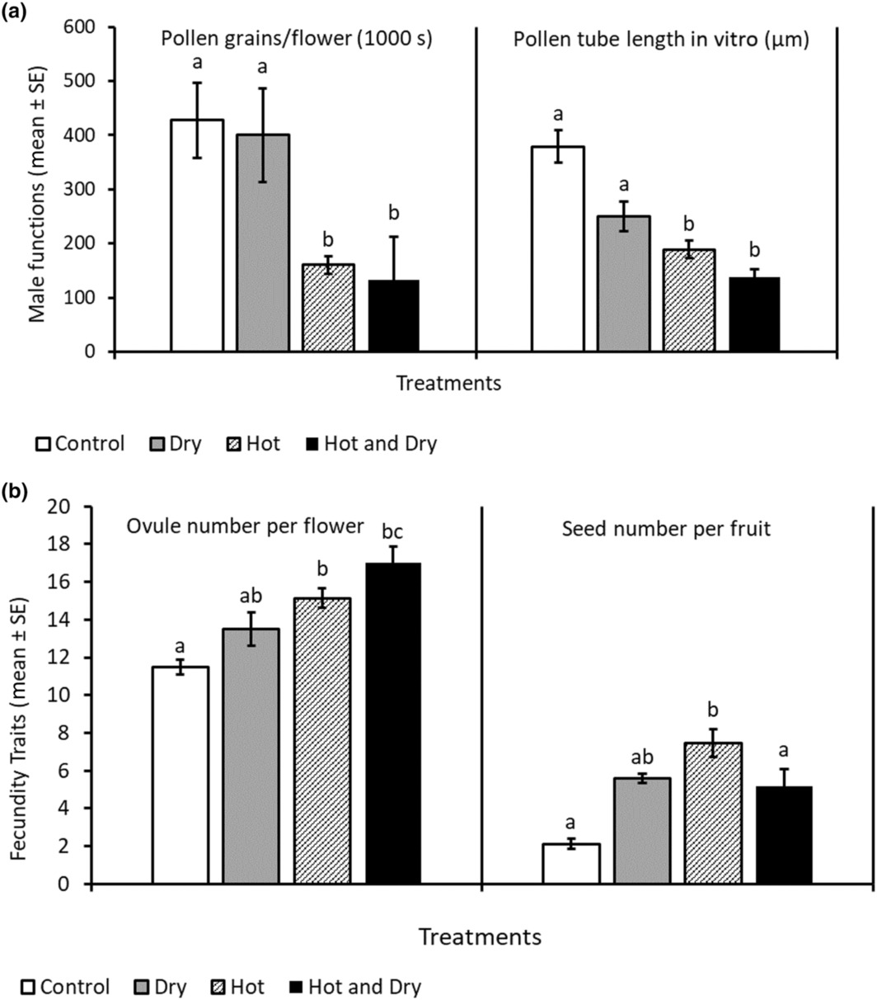

# general use
library(tidyverse)
library(readxl)
library(here)
library(janitor)
# visualizing pairs
library(GGally)
# model selection
library(MuMIn)
# model predictions
library(ggeffects)
# model tables
library(gtsummary)
library(flextable)
library(modelsummary)
drought_exp <- read_xlsx(path = here("data",
"Valliere_etal_EcoApps_Data.xlsx"),
sheet = "First Harvest")Homework 3
link to repository: https://github.com/environmentalemily/cunningham-emily_homework-03.git
Problem 1: Multiple linear regression: model selection and construction
a. Creating a table
Table 1: Comparing Models of Predictor Variables For Total Biomass of Native Flowers
| Model Number | Predictors | AIC | Delta AIC |
|---|---|---|---|
| Null Model | none | -0.75 | 81.22 |
| Model 1 | SLA, water treatment, species | -153.8 | 2.44 |
| Model 2 | SLA, water treatment | -95.8 | 60.37 |
| Model 3 | SLA, species | -124.1 | 32.12 |
| Model 4 | water treatment, species | -156.2 | 0.00 |
b. Statistical methods
To examine the influence of water treatment, SLA, and species type on total biomass I created 5 models. The null model depicts a model of total biomass with no predictors. Model 1 is a saturated model that depicts total biomass as a function of SLA, water treatment, and species type. Model 2 depicts total biomass as a function of SLA and water treatment. Model 3 depicts total biomass as a function of SLA and species type. Model 4 depicts total biomass as a function of water treatment and species type. To determine the model that best described the accurate predictor(s) of total biomass, I used the model.sel() command from the MuMIn package to create a model selection table, which ranks the models by AIC value. Model 4 had the lowest AIC value, and was therefore ranked first. To evaluate linear model assumptions I, looked at the AIC value, and the diagnostics for the model. Before fitting the model, I looked for a linear relationship between response and predictor variable, confirmed the variables are not influential on each other (independent), and after fitting the model, confirmed points had homoscedasticity (constant variance) of error, and a normally distributed error (which you can see on the qq plot).
c. visualization of the model predictions with underlying data for “best” model

*This is the code used to create the visualization below, but I had an issue rendering after playing around with the code in a another qaurto doc and rendering it to see how it would look.

d. Creating a Caption:
Data from: Can we condition native plants to increase drought tolerance and improve restoration success? [Dataset]. Dryad. https://doi.org/10.5061/dryad.v0861f7.
The visualization titled “Model 4 Predictions vs Actual Data” compares total biomass (y- axis) to data from treatments (drought stressed and well watered) by species. The brown data points represent drought stressed conditions, and bright green represents well watered treatments. Dark data points represent predictions made by model 4.
e.
The predictors that best described total mass are water treatments and species (model 4). On average, well- watered plants had higher total mass than those with the drought stressed treatment. On average, gumweed, california poppy, and purple needlegrass seem to have the highest biomass; deerweed, scarlet bugler, and purple sage seem to have the lowest biomass.
Problem 2: Affective data visualizations
a. For my data, an affective visualization would look like a collection of points represented by a water droplet shape. They would be organized in order. The left side of the drop will be outlined in a color to represent an activity (scuba, surf, swim, dip), and the right side of the drop will be outlined in a color to represent location (pool, stream, ocean). There is a symbol for each temperature recorded that will be displayed next to the water droplet.
b. Sketch of Visualization

c. Draft of Visualization

d. Artist Statement
My piece uses water droplets to represent observations (1-39) from my personal data collection, where I recorded the activity I performed in the water each day, even if it was just an ocean dip. Within and around these water drop I show what the specific activity was, what body of water I performed that activity in, and what the high temperature of that day was. After looking through the whole site, I was really inspired by Giorgia Lupi’s “A Week of Distractions” (Week 44) piece, and actually directly used her outline– tweaking it to fit my variables. I quickly made a wrangled data frame in R with my updated data sheet so that I could easily navigate it, then drew out 39 water droplets on watercolor paper. I created a color key on my brainstorm paper, then filled in the droplets using watercolors appropriately. I added dashed lines to notable good days( i.e. when I got to scuba in the ocean the first time, or hiking to Seven Falls with friends).
Problem 3: Statistical Critique
a. Revisit and Summarize
The authors used a univariate ANOVA, Tukey post hoc, and a Kruskal Wallace test to address their main research question “does temperature stress affect Collinsia herterophylia, an annual mix- mated hermaphrodite, and if so– how?”.
Figures 1:

ANOVA figure a: The x- axis is treatments, and the y- axis is plant growth traits.
ANOVA figure b: The x- axis is treatments, and the y is reproductive investments.
Figure 2:

The Kruskal- Wallis test to analyze herkogamy figure a: The x-axis is treatments, and the y- axis is floral traits.
Kruskal- Wallace figure b: The x- axis is treatments and the y-axis is herkogamy.
Figure 3:

The Kruskal- Wallace test to analyze fecundity (ability to produce abundance of offspring) figure a: The x- axis is treatments and the y-axis is male functions.
Kruskal- Wallace test to analyze fecundity figure b: The x-axis is treatments and the y-axis is fecundity traits.
b. Visual Clarity
For all three figures: The authors represented their statistics accureatly in their figure(s). The x and y axis are in a logical position to compare growth and reproductive data to each treatment. Underlying data is not shown, instead concise bar charts were created to represent the treatments applied (control, dry, hot, hot and dry). The authors do show summary statistics (bars represent the ±SE of the different traits), and bars with different letters indicate statistically significant differences between treatments at p [less than] 0.001.
c. Aesthetic Clarity
There is no visual clutter because there is no underlying data displayed, and each treatment is represented by a a level of shading. I would describe the data:ink ratio as relatively even. There is no extra labeling, the key is effective, and the data is ready to read and infer.
d. Recommendations
Just because I now know that beautiful data is more fun to read, and easier to get people to pay attention now– I would recommend using a color array instead of various shades of black to represent the treatments of this experiment.